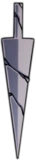
Aguijón Antiguo
Es el primer aguijón del Caballerito. Su hoja está desgastada por el paso del tiempo y representa el arma inicial de la aventura.
En Hollow Knight, el Caballerito cuenta con diferentes habilidades que le permiten explorar el reino de Hallownest, superar obstáculos y enfrentarse a los enemigos que encuentra durante su aventura. Estas capacidades incluyen mejoras del aguijón, hechizos, artes de combate, habilidades de movimiento y poderes relacionados con el mundo de los sueños. Además, existen numerosos amuletos que modifican sus características y permiten crear diferentes combinaciones de habilidades.
Disfruta de la música que acompaña la aventura por Hallownest mientras conoces las habilidades y los amuletos del Caballerito.
El Aguijón es el arma principal del Caballerito. Se utiliza para atacar a los enemigos, romper determinados obstáculos y conseguir ALMA al golpear a los adversarios. A lo largo de la aventura, el jugador puede llevarlo al Forjaguijones, ubicado en la Ciudad de Lágrimas, para mejorar su poder de ataque.
Existen cinco versiones del Aguijón, comenzando por el modelo antiguo y terminando con el Aguijón Puro, que representa su máximo nivel de mejora.

Es el primer aguijón del Caballerito. Su hoja está desgastada por el paso del tiempo y representa el arma inicial de la aventura.
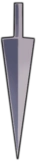
Es la primera mejora del arma. Su hoja recupera parte de su filo y permite causar mayor daño a los enemigos.
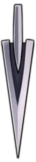
Presenta una estructura mejorada y una hoja más resistente, aumentando considerablemente su capacidad de ataque.
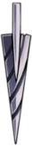
Es una versión avanzada que ofrece un mayor poder de ataque y permite enfrentarse a adversarios más resistentes.
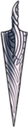
Es la mejora definitiva del aguijón. Su hoja alcanza su máximo potencial y proporciona el mayor daño posible entre sus cinco versiones.
Otra técnica importante consiste en golpear hacia abajo mientras el Caballerito se encuentra en el aire. Esta acción permite rebotar sobre enemigos, objetos y determinadas superficies. Es una técnica muy útil para alcanzar plataformas, superar obstáculos y evitar algunos peligros durante la exploración.
Los hechizos son habilidades mágicas que utilizan el ALMA acumulada durante los enfrentamientos. Permiten realizar ataques especiales que causan daño a los enemigos y ofrecen diferentes formas de combatir. Cada hechizo cuenta con una versión mejorada que aumenta su poder y modifica sus características.
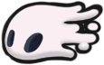
Lanza un proyectil de energía que avanza horizontalmente y daña a los enemigos que encuentra en su recorrido.
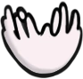
Permite golpear el suelo utilizando energía del ALMA. Produce una onda de impacto que daña a los enemigos cercanos.
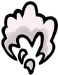
Libera una serie de explosiones mágicas hacia arriba que golpean a los enemigos que se encuentran sobre el Caballerito.
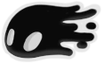
Es la mejora del Espíritu Vengativo. Lanza una sombra más poderosa que atraviesa a los enemigos y causa mayor daño.
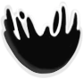
Es la versión mejorada de Inmersión Desoladora. Combina ALMA y Vacío para producir un ataque más poderoso.
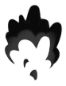
Es la versión mejorada de Espectros Aulladores. Utiliza el poder del Vacío para generar un ataque mágico de gran intensidad.
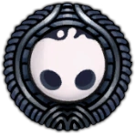
Consume ALMA para recuperar una máscara de vida. Es una de las principales formas de curación durante la exploración y los enfrentamientos.
Para utilizar estos hechizos es necesario consumir ALMA. Por ello, el jugador debe administrar correctamente este recurso y decidir cuándo utilizar ataques mágicos o recuperar máscaras mediante la concentración.
Las Artes del Aguijón son técnicas especiales enseñadas por los Maestros del Aguijón. A diferencia de los ataques normales, necesitan cargarse antes de ejecutarse. Estas técnicas permiten realizar movimientos ofensivos más potentes y ampliar las posibilidades de combate del Caballerito.
Enseñada por el Maestro Sheo. Permite realizar un poderoso golpe frontal con el aguijón.
Enseñada por el Maestro Mato. El Caballerito gira sobre sí mismo mientras realiza varios ataques alrededor de su cuerpo.
Enseñada por el Maestro Oro. Permite lanzar un poderoso ataque horizontal después de realizar un desplazamiento hacia delante.
Las habilidades de movimiento permiten al Caballerito recorrer diferentes regiones de Hallownest. Algunas sirven para alcanzar lugares elevados, atravesar grandes distancias o superar obstáculos que inicialmente parecen inaccesibles.
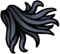
Permite realizar un desplazamiento rápido hacia delante, tanto en el suelo como en el aire. Es conocida como la habilidad de dash.
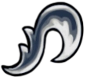
Permite sujetarse a las paredes y saltar desde ellas. Es fundamental para escalar estructuras y acceder a nuevas zonas.
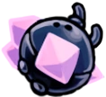
Permite cargar energía y salir disparado horizontalmente a gran velocidad. Es útil para atravesar espacios extensos y llegar a plataformas lejanas.
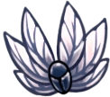
Son las responsables del doble salto. Permiten volver a saltar mientras el Caballerito se encuentra en el aire.
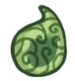
Proporciona protección frente al ácido. Gracias a ella es posible atravesar piscinas de ácido que bloquean determinados caminos.
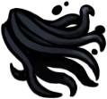
Es la mejora del dash que permite atravesar enemigos y ciertos ataques sin recibir daño durante el desplazamiento.
El Aguijón Onírico es una herramienta especial que permite entrar en contacto con los sueños de los habitantes de Hallownest. También permite obtener Esencia, un recurso relacionado con el mundo de los sueños y necesario para desbloquear diferentes recompensas.
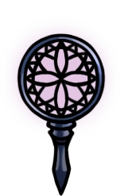
Permite leer los pensamientos de algunos personajes, acceder a determinados sueños y obtener Esencia de los espíritus.
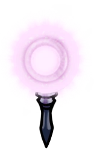
Es la versión mejorada del Aguijón Onírico. Su poder permite acceder a recuerdos y sueños que anteriormente estaban protegidos.
Permite establecer un punto de viaje y regresar a él utilizando Esencia. Facilita los desplazamientos entre determinadas regiones del reino.
Los amuletos son objetos especiales que modifican las capacidades del Caballerito y le proporcionan diferentes ventajas durante la exploración y los combates de Hallownest. Cada amuleto tiene un efecto particular y necesita una determinada cantidad de muescas para poder equiparse.
Existen 45 amuletos en Hollow Knight. Algunos tienen versiones mejoradas que reemplazan a las originales, por lo que no es posible conservar todas las versiones al mismo tiempo.
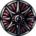
Muestra la ubicación del Caballerito en el mapa, facilitando la orientación durante la exploración.
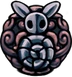
Invoca un pequeño enjambre que recoge automáticamente los Geo que quedan en el suelo.

Aumenta el tiempo de invulnerabilidad después de recibir daño, permitiendo escapar de situaciones peligrosas.
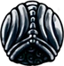
Aumenta la cantidad de ALMA obtenida al golpear enemigos con el aguijón.
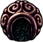
Aumenta el poder de los hechizos, haciendo que los ataques mágicos causen más daño.
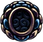
Aumenta considerablemente la cantidad de ALMA obtenida al golpear enemigos con el aguijón.
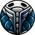
Permite realizar desplazamientos rápidos con mayor frecuencia y también ejecutar un dash hacia abajo.
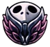
Aumenta la velocidad al correr, facilitando los desplazamientos por las diferentes regiones.
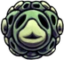
Permite recuperar una pequeña cantidad de ALMA al recibir daño de los enemigos.
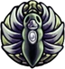
Permite lanzar un rayo de energía con el aguijón cuando el Caballerito tiene todas sus máscaras de vida.
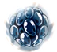
Aumenta la cantidad de máscaras de vida del Caballerito, pero se rompe cuando este muere.
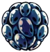
Es la versión mejorada del Corazón Frágil. Aumenta las máscaras de vida y no se rompe al morir.
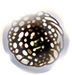
Aumenta la cantidad de Geo que dejan los enemigos, pero se rompe cuando el Caballerito muere.
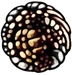
Es la versión mejorada de Codicia Frágil. Aumenta la cantidad de Geo obtenida y no se rompe al morir.
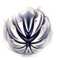
Aumenta el daño del aguijón, pero se rompe cuando el Caballerito muere.
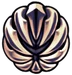
Es la versión mejorada de Fuerza Frágil. Aumenta el daño del aguijón y permanece intacta después de morir.
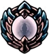
Reduce la cantidad de ALMA necesaria para utilizar los hechizos, permitiendo lanzarlos con mayor frecuencia.
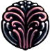
Evita que el Caballerito retroceda al golpear enemigos con el aguijón.
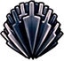
Aumenta el retroceso que reciben los enemigos cuando son golpeados con el aguijón.
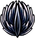
Incrementa la velocidad de los ataques normales con el aguijón, permitiendo realizar más golpes en menos tiempo.
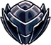
Aumenta el alcance del aguijón, permitiendo atacar a los enemigos desde una mayor distancia.
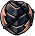
Aumenta considerablemente el alcance del aguijón, superando el efecto de Uña Larga.
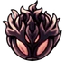
Aumenta el daño del aguijón cuando al Caballerito solamente le queda una máscara de vida.
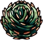
Cuando el Caballerito recibe daño, aparecen espinas que atacan a los enemigos cercanos.
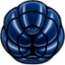
Protege al Caballerito mientras se concentra para recuperar máscaras, bloqueando determinados ataques.
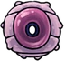
Modifica el hechizo Espíritu Vengativo y lo convierte en una serie de criaturas que atacan a los enemigos.
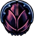
Genera una nube dañina alrededor del Caballerito que puede afectar a los enemigos cercanos.
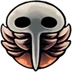
Consume ALMA para crear pequeñas criaturas que persiguen y atacan a los enemigos.
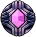
Reduce el tiempo necesario para concentrar ALMA y recuperar máscaras de vida.
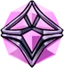
Permite recuperar dos máscaras de vida en una sola concentración, aunque requiere más tiempo.
Proporciona dos máscaras azules adicionales que desaparecen cuando el Caballerito descansa en un banco.
Proporciona cuatro máscaras azules adicionales que funcionan como protección temporal.
Aumenta la cantidad de máscaras azules y convierte las máscaras normales en máscaras de Sangre Vital.
Permite recuperar automáticamente una máscara de vida después de esperar sin recibir daño.

Al terminar una concentración, libera una nube de esporas que puede dañar a los enemigos cercanos.
Permite que el dash sombrío cause daño a los enemigos que atraviesa el Caballerito.
Transforma al Caballerito mientras se concentra y le permite desplazarse por el suelo para esquivar ataques.
Reduce el tiempo necesario para cargar las Artes del Aguijón, facilitando el uso de estas técnicas especiales.
Invoca pequeñas tejedoras que acompañan al Caballerito y atacan a los enemigos cercanos.

Aumenta la cantidad de Esencia obtenida al utilizar el Aguijón Onírico y reduce el tiempo necesario para cargarlo.

Crea un escudo flotante que gira alrededor del Caballerito y puede bloquear ataques enemigos.
Invoca a un pequeño compañero que ataca a los enemigos y crece conforme se desarrolla el ritual de la compañía de Grimm.
Ofrece la posibilidad de evitar recibir daño de los enemigos mediante un efecto protector aleatorio.
Regenera ALMA lentamente mientras está equipado. Está relacionado con la historia del Rey Pálido y la Dama Blanca.
Es una mejora del Alma del Rey que permite acceder a elementos importantes de la historia y modifica el comportamiento de ciertas criaturas del Vacío.